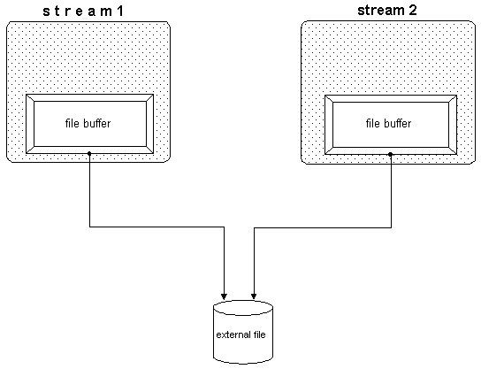

In the previous chapter, we saw how streams can share stream buffers. In this chapter, we show that streams can also share files, as when streams in different processes exchange data through a file.
Figure 35 illustrates how streams share files:

Because streams use a buffer, the content of the file might be different from the content of the buffer that is supposed to reflect the file's content. When data is extracted through a file stream, a certain part of the file's content is read into the buffer; subsequent extractions access the buffer instead of the file. Once the file content is modified, the buffer content becomes obsolete. Similarly, when data is written through a file stream, the output is stored in the buffer and not written to the file. The file is accessed only when the buffer is full. For this reason, output from one stream is not immediately available to the other stream.